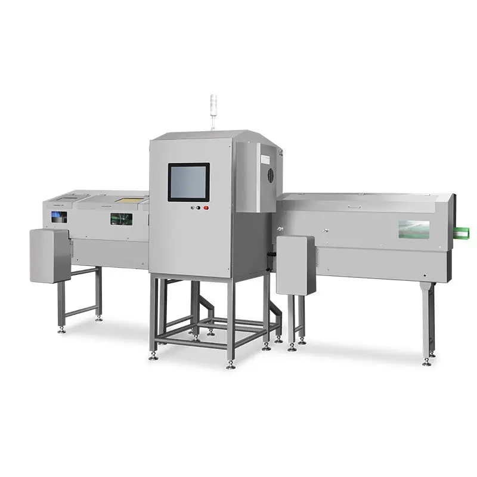
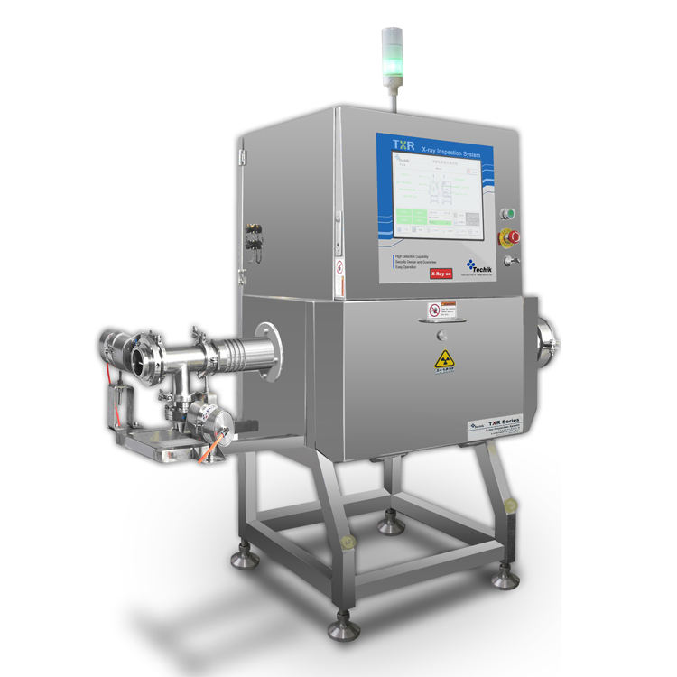
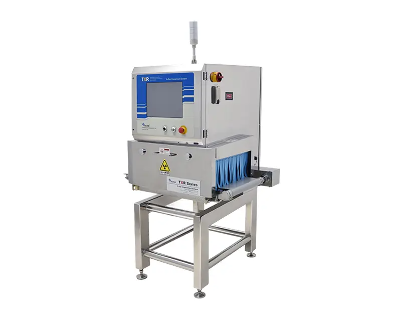
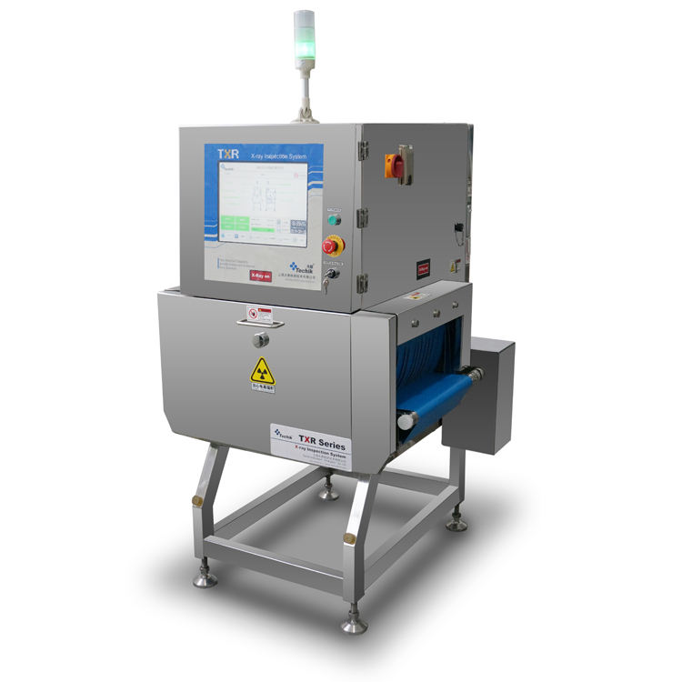

Judul Produk
Deskripsi Produk
Deskripsi lengkap produk akan muncul di sini.
Spesifikasi & Catatan
Spesifikasi rinci produk.
Tampilan detail mesin dari berbagai sudut. Klik pada produk untuk melihat detail.

Tampilan panel kontrol utama

Detail belt conveyor

Sistem pembuangan (reject system)

Head detektor berpresisi tinggi